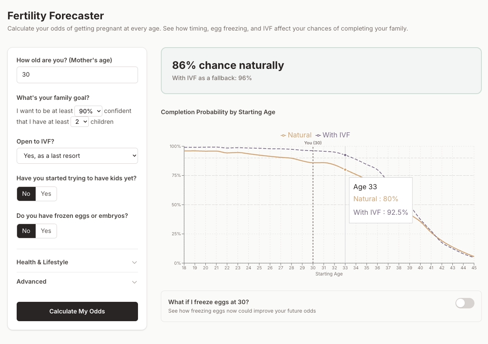
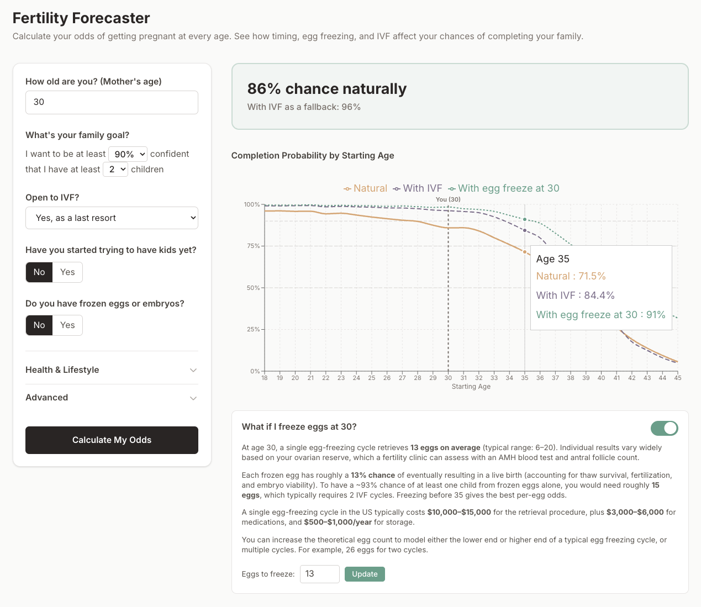
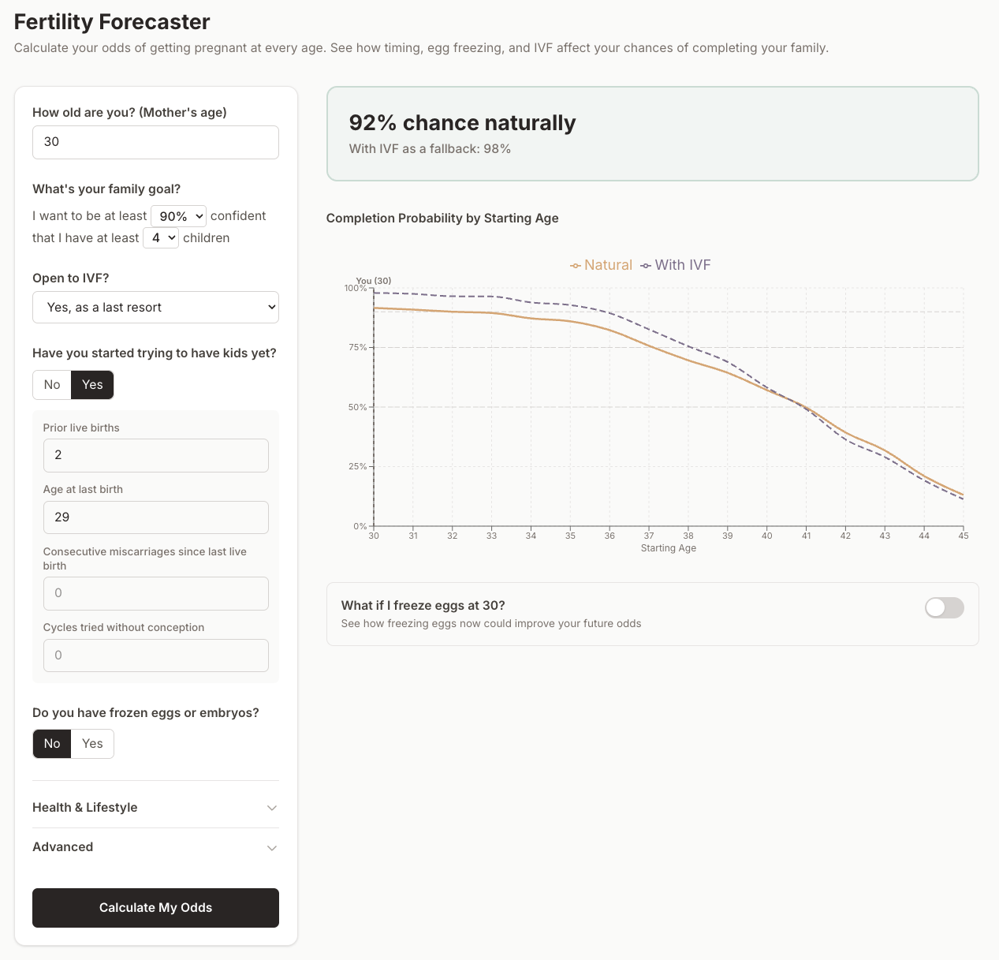
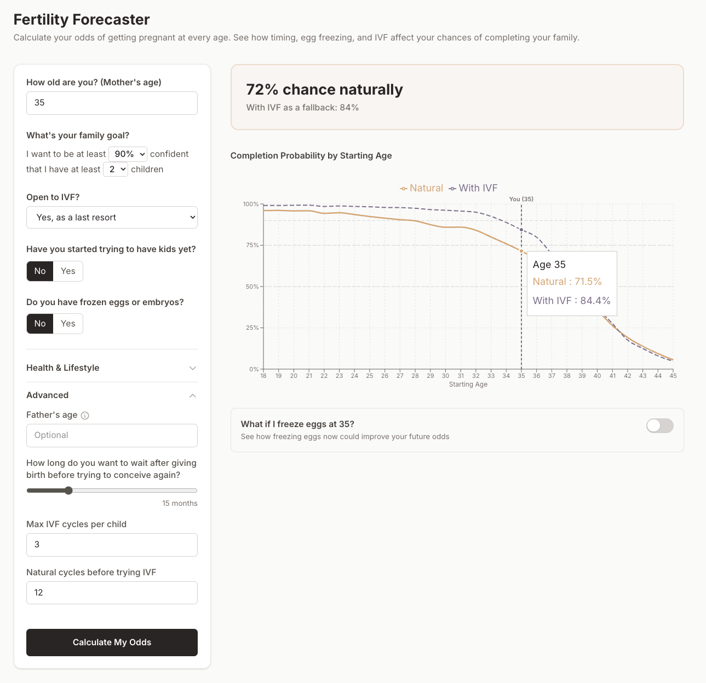
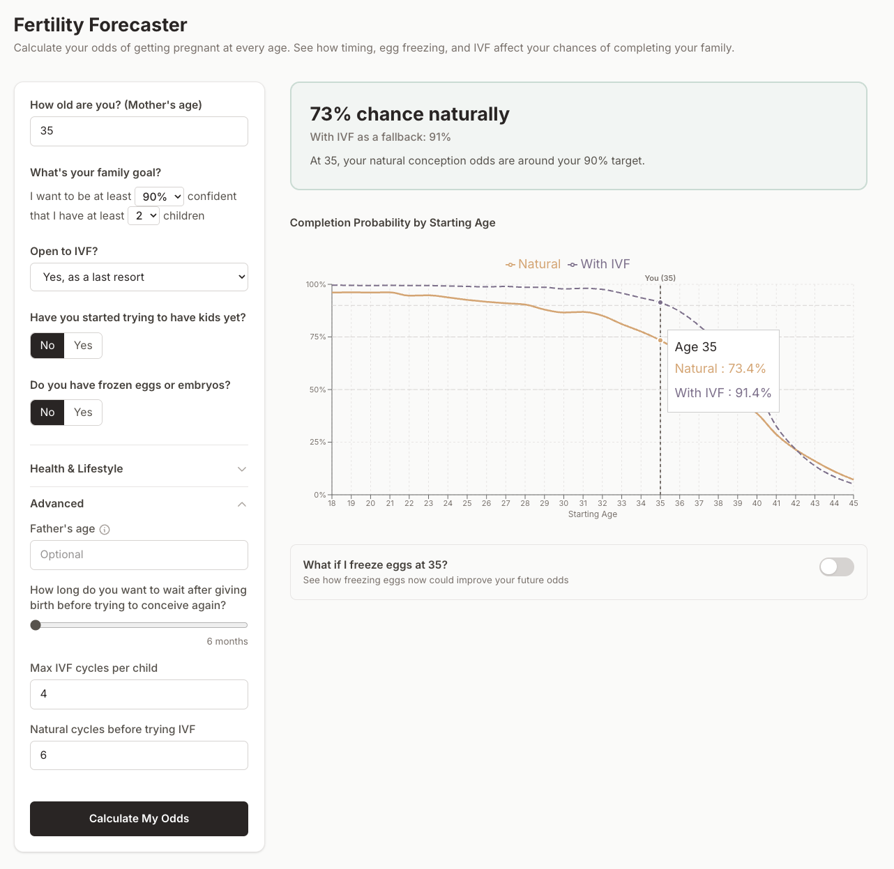

Fertility Forecaster
This is a tool (available at fertilityforecaster.com) that I built that estimates your chances of having your desired number of children. It visualizes the cost of waiting an additional year or two and lets you see how much IVF or freezing your eggs improves your chances. I built a statistical simulation model that is based on published medical research. In the product, users can input their age, health history, and any banked frozen eggs/embryos to see a personalized estimate.
A woman who is 30 years old and wants to children for example, will see that she has an 86% chance of having two children naturally if she starts trying now, with odds going up to 96% if she uses IVF. If she waits until she's 33, she can still reach the 90% threshold with IVF:

And if she chooses to freeze one batch of eggs at 30 and is able to freeze the average number of eggs for her age (13), then she can reach that 90% threshold with IVF starting at age 35:

The tool also allows users to input their health history. Higher BMI and smoking status are known to lower fertility, for example. Prior history of live births on the other hand, demonstrates fertility and the tool will model higher chances of conceiving additional children. A 30-year-old woman who already has 2 children and wants to have 2 additional children for example, will see more optimistic results than a 30-year-old woman who wants to have 2 children and has not been pregnant:

Fertility Forecaster defaults to some reasonable parameters for how long to wait til switching to IVF, how long to wait between children, and how many IVF cycles to try per child. These are the results with the default parameters for a 35-year-old woman who wants to have two children:

But a couple who is highly motivated to have children may adjust the parameters in the application. By decreasing the wait time between children from 15 months to 6 months, increasing the max IVF cycles per child from 3 to 4, and lowering the number of natural cycles before switching to IVF from 12 months to 6, odds with IVF increase from 84.4% to 91.4%:

The code for Fertility Forecaster is open sourced on GitHub. An explanation of the methodology is also available here.